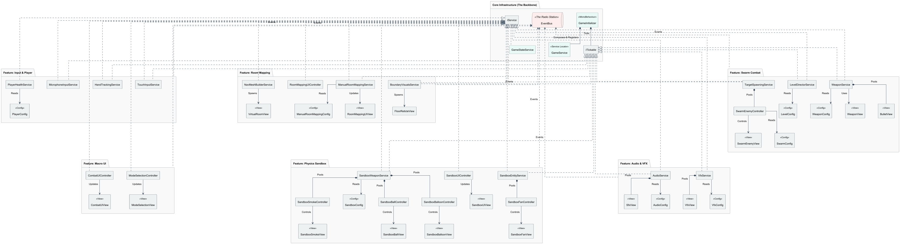
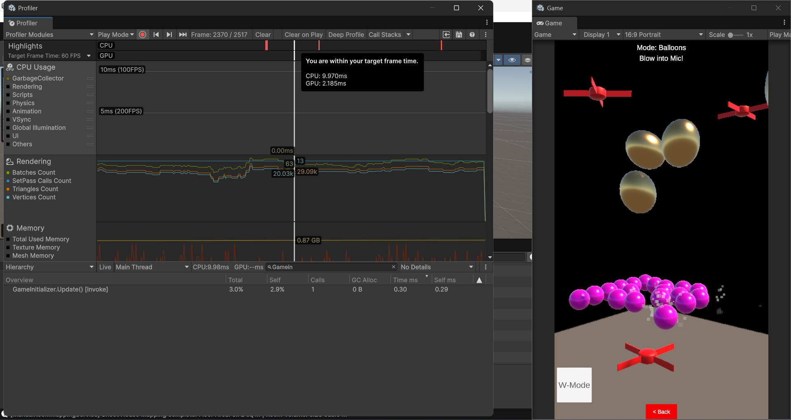

Gameplay Demo
Project Overview
GripFire XR is an Augmented Reality (AR) digital twin experience that blends procedural room generation with a decoupled, event-driven physics sandbox and swarm-based AI combat.
The core engineering challenge was to build a mobile AR application that maintains a flawless 60 FPS without thermal throttling. To achieve this, I completely abandoned standard Unity MonoBehaviour spaghetti code in favor of a highly scalable MVC-S (Model-View-Controller-Service) architecture, ensuring zero memory allocations on the Heap during active gameplay.
Architecture: Strict MVC-S & Decoupling
The Problem: Spaghetti Code
Standard Unity development relies heavily on monolithic MonoBehaviour scripts and Singletons that directly reference each other. As projects scale, this tight coupling creates "spaghetti code," making systems fragile, hard to test, and prone to breaking when unrelated features are modified.
The Solution: Service Locator & Event Bus
I engineered a strict MVC-S (Model-View-Controller-Service) architecture. Unity components are isolated in "Dumb Views" with zero logic. Pure C# Controllers handle math and state. Systems are entirely blind to one another; dependencies are injected via a Service Locator, and cross-system communication is exclusively broadcasted through a decoupled, thread-safe Event Bus.

System Architecture UML Diagram (Click to Enlarge)
Zero Garbage Collection (GC) Optimization
The Problem: AR Frame Stutter & Thermal Throttling
Instantiating objects and passing class-based events during active gameplay creates C# Heap Allocations. When the Heap fills, the Garbage Collector (GC) freezes the main thread to clean up. In Augmented Reality, even a 10-millisecond GC freeze causes tracking drift, drops the frame rate, and induces motion sickness.
The Solution: 0-Byte Allocations
I eliminated runtime garbage by replacing native Unity Update() methods with a centralized ITickable loop using a cached integer for loop. All event payloads are stack-allocated readonly struct types. Finally, I implemented the "Hoard & Return" Object Pooling strategy to pre-warm all dynamic entities (enemies, bullets, VFX) during the loading screen.
// GameInitializer.cs - The Centralized 0-GC Update Loop
private void Update()
{
// Flush any events that were published from background threads.
EventBus.ProcessMainThreadActions();
// A standard 'for' loop prevents IEnumerable boxing, achieving true 0B GC Allocation!
for (int i = 0; i < _tickableServices.Count; i++)
{
_tickableServices[i].OnTick();
}
}

Unity Profiler: Sustained 0 Bytes GC Allocation during intense combat and physics simulation (Click to Enlarge)
Overcoming AR Hardware Constraints
The Problem: True XR Hardware is Expensive
True Mixed Reality—where digital physics interact with physical furniture—usually requires $500 to $3,500 headsets equipped with LiDAR and depth sensors (like the Apple Vision Pro or Meta Quest 3). I certainly didn't have a spare $3,500 lying around (ha!), but I refused to let hardware limitations stop me from building a true XR experience.
The Solution: The Hybrid "Digital Twin" Mapping
I engineered a software solution to bypass the hardware limits, bringing XR to standard mobile phones. I combined Unity's ARPlaneManager and ARRaycastManager into a hybrid tool that lets players manually trace their living room. To conquer AR Tracking Drift, the entire procedural room is bound to a single ARAnchor, converting all World coordinates into Local space. If the phone's tracking drifts, the anchor corrects it, and the digital physics perfectly snap back to the real world!
Procedural Geometry & AI Pathfindingg
The Problem: "Dumb" AR Data
Raw AR frameworks provide shifting, unreliable planes that lack logical context. If you try to spawn AI enemies directly onto these planes, they will walk through physical walls, get stuck inside real-world furniture, or fail to find a valid NavMesh path.
The Solution: Digital Twin Triangulation
I built a hybrid raycasting tool allowing users to mathematically trace their room. To prevent the main thread from freezing, the raw coordinate data is securely passed to a Background CPU Thread, which procedurally triangulates a double-sided 3D floor mesh. The NavMesh is then baked at runtime, and AI agents utilize Barycentric Coordinates to guarantee 100% safe, $O(1)$ constant-time spawn locations.